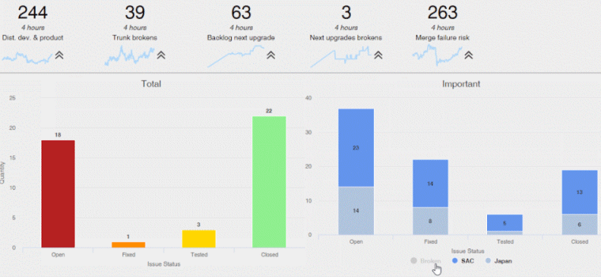
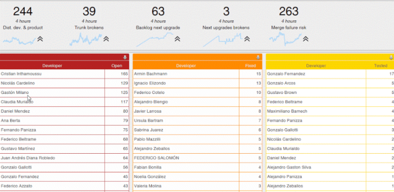

Defines a Business Dashboard with several key performance indicators. A good data story brings data and facts to life. Use the Dashboard object to walk your audience through the data and insights you want to make sure they see and informs them. Dashboards provide at-a-glance views of KPIs (key performance indicators) relevant to a particular objective or business process. Often, the "dashboard" is displayed on a web page that is linked to a database that allows the report to be regularly updated.  In just a few clicks, you can combine data from Query objects or Data Provider objects, add filters, relate them, and drill down into more detail when needed.  Some of the benefits of using digital dashboards include:
Technology usedThe new Dashboard object is based on the Query object and the QueryViewer control. It allows to integrate into a single screen several queries and filters, takes care of the interactions between those elements. For a Dashboard object to be displayed at runtime, it must be executed using a DashboardViewer control. A Dashboard object is composed of a layout and parameters where you will add different kinds of widgets to it. DefinitionEach dashboard has a group of general properties, like the title, filters position or the refresh period. It also has an editor where you can place all the components of the dashboard (every component in a dashboard is called a widget). There are several types of widgets, but the two more relevant are queries and filters. Properties
The dashboard editor is a live editor. If you have a connection to the database, while editing it, you may see the results of the process as you manipulate the dashboard. AvailabilityThis property is available since GeneXus 15 upgrade 12. SamplesSee also
|